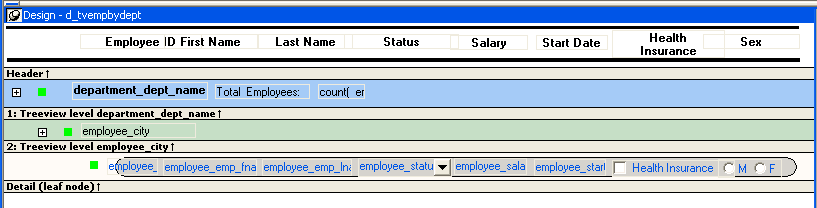
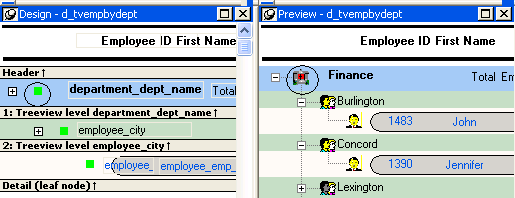
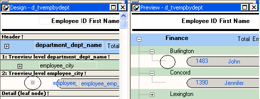

The Design view for the TreeView DataWindow differs from the traditional Design view for most DataWindow presentation styles.

The Design view has a header band, a TreeView level band for each added level, a detail band, a Trailer band for each level, a summary band, and a footer band.
By default, the controls in the header band are the heading text of the detail band columns, and the controls in the detail (leaf node) band are all the column controls except for the first-level columns (in the 1:Treeview level band) that you selected when you used the TreeView wizard. Columns that you specify as additional levels remain in the detail band.
The minimum height of each TreeView level band is the height of the tree node icon.
There are three icons in the Design view that represent the locations of nodes, icons, and connecting lines in the tree to help you design the DataWindow. Columns must always display to the right of the state and tree node icons:


The position of all the icons changes when you change the indent value.
For more information about specifying icons and the indent value, see "Setting properties for the TreeView DataWindow."